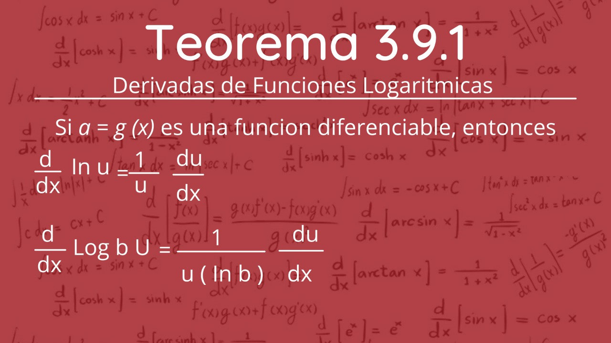
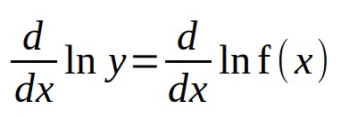
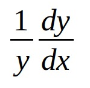
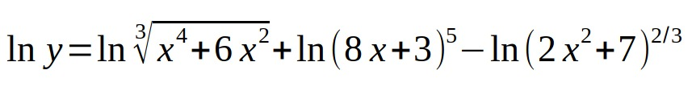
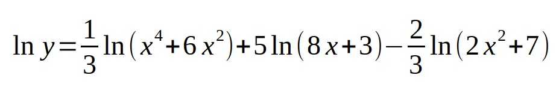
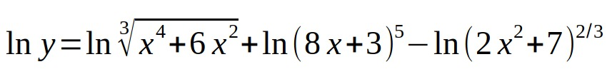
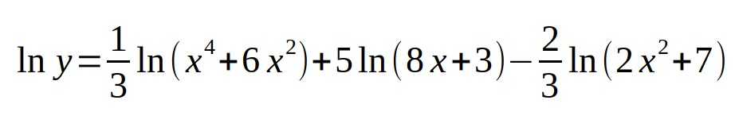
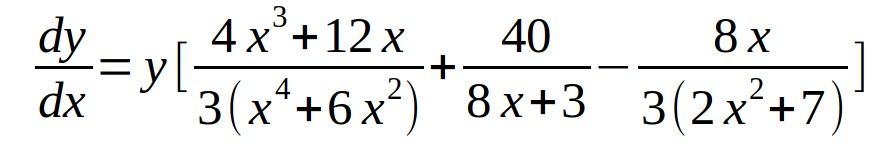

3.9 Funciones Logarítmicas
Una función logarítmica es aquella que genéricamente se expresa como f (x) == logax, siendo a la base de esta función, que ha de ser positiva y distinta de 1.
Teorema 3.9.1
La diferenciación de una función complicada y f(x) que contiene productos, cocientes y potencias puede simplificarse por medio de una técnica denominada diferenciación logarítmica.
Directrices para diferenciación logarítmica
i) Tome el logaritmo natural de ambos miembros de y = f(x).Use las propiedades generales de los logaritmos para simplificar tanto como sea posible el miembo derecho de ln y = ln f(x).
ii) Diferencie implícitamente la versión simplificada de ln y ln f(x):

iii) Puesto que la derivada del miembro izquierdo es , multiplique ambos miembros pory y sustituya y por f(x).
 



Al diferenciar la última línea con respecto a x obtenemos:

ambos lados se multiplican por y
y se sustituyen por la expresión original